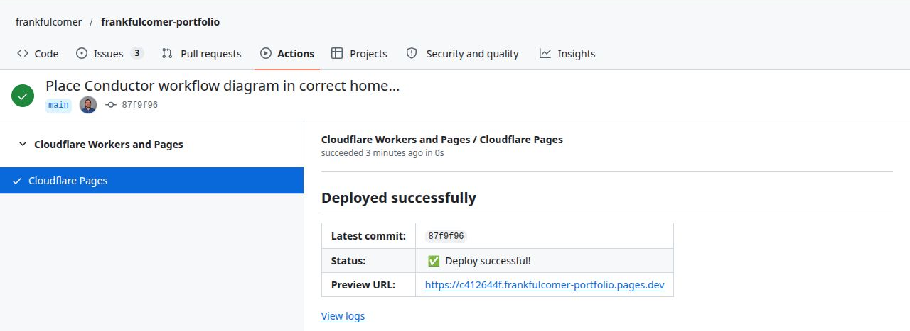
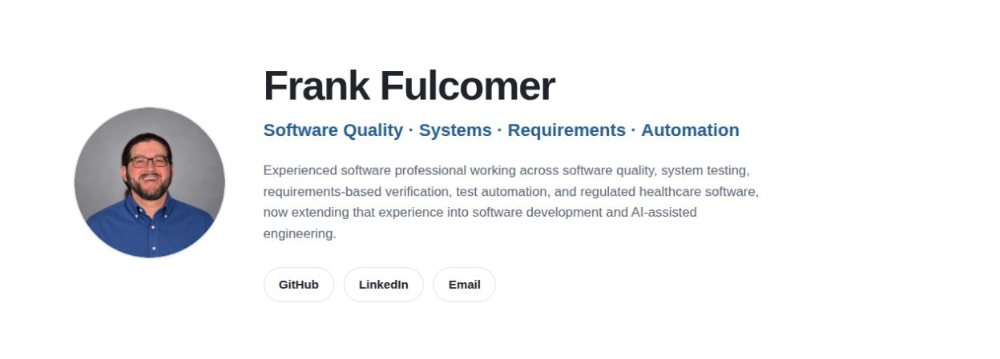
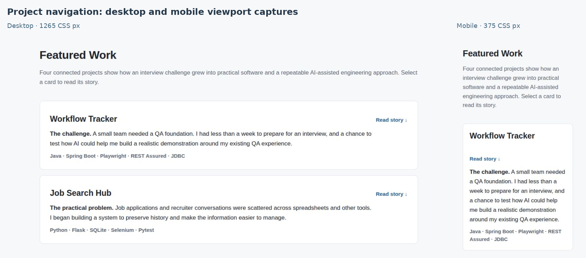

Project story
Personal Portfolio: Shipping a Small, Real Product
A public-facing website built to communicate engineering work clearly—and to put the same development principles under practical constraints.
The situation
I had started publishing projects on GitHub to demonstrate that my software quality experience was extending into development and modern automation. The repositories contained code, requirements, tests, and engineering notes. But I kept returning to a basic problem: someone considering me for a role might never get far enough into a repository to understand why the work mattered.
A recruiter, business analyst, QA lead, and developer may all look at the same project for different reasons. The recruiter wants to understand my capabilities. The QA lead wants to see how I think about evidence and risk. The developer may want to inspect architecture and code. I needed a place that welcomed all of them without reducing the projects to technology badges.
Before this project, I had never purchased a personal domain or arranged website hosting. Building a professional portfolio meant learning the setup as well as creating the site, and using that unfamiliar technology to deliver something useful while my job search was active.
The approach
That became the central content decision. Each project should begin with a recognizable problem, explain the approach and important choices, and then offer deeper technical detail. The GitHub repositories remain the source of evidence. The portfolio provides the context that makes someone interested enough to open them.
Within hours of deciding I needed a professional portfolio, I had purchased domains, configured DNS and Cloudflare Pages, connected GitHub, and published an initial version. I chose static HTML and CSS because they met the requirements with little infrastructure to maintain. The first release needed to be presentable and informative; it did not need to be a finished product before anyone could see it.
AI accelerated the unfamiliar setup and implementation. I retained responsibility for the architecture, scope, decisions, and acceptance of the work. That made it practical to learn while delivering, without treating a convincing suggestion as a verified result.
Publishing gave me a useful starting point for improving the content, presentation, accessibility, and supporting evidence through review. A successful deployment confirms that a version was published; it does not establish that the site is usable, accessible, or correct. Those qualities still need their own checks.
Choosing the right-sized architecture
I could have built the site with a modern frontend framework, a content management system, or a backend service. None was necessary for the first goal. Static HTML and CSS, versioned in GitHub and deployed through Cloudflare Pages, offered a straightforward way to publish quickly with little infrastructure to maintain.
That choice was not about avoiding engineering. It was about applying engineering judgment to scope. The site still needs responsive behavior, accessible navigation, clear content hierarchy, sensible metadata, secure hosting, and reliable updates. A small technology stack does not excuse poor quality; it simply reduces the number of moving parts.

Designing for different readers
I wanted the visual impression to be mature, approachable, and technically current without looking like a flashy developer template. The design favors light surfaces, readable typography, whitespace, and a recognizable professional photograph. GitHub and LinkedIn are easy to reach, while the project pages let interested readers go deeper.
The same principle shaped the writing. I have years of experience in quality engineering, requirements, regulated software, and cross-functional work. My newer development projects should complement that history, not pretend I have spent decades as a Java or Python application developer. The portfolio needs to be confident about what I know and transparent about what I am learning.

Making quality part of the site
I documented responsive design and mainstream browser support as release expectations, including usable reflow down to 320 CSS pixels. Semantic structure, keyboard navigation, focus visibility, and readable layouts are part of the work, not decorative finishing touches. Those targets need to be checked and refined as the site evolves; a written requirement is not the same as a completed validation result.
The project also provides a practical setting for the Conductor approach. AI can help produce pages and suggest changes, but the content, technical claims, visual acceptance, and decision to publish still need human judgment. The site is public, so inaccurate wording or a broken link is more than an internal development inconvenience.

What I took away
One of the hardest choices in a personal project is deciding when there is enough. It would be easy to spend weeks refining a page that no employer can yet see. Instead, I chose to put four connected project stories in place and improve them through review. That makes the site useful now while leaving room for real screenshots, diagrams, stronger test evidence, and more detailed case studies later.
The portfolio completes a useful loop: Workflow Tracker tested my abilities, Job Search Hub addressed a real need, Conductor emerged from the challenge of coordinating the work, and this site applies those lessons to communicating the results. The guiding principle is simple: right-sized today, extensible tomorrow.
Publication and quality evidence
How the site makes the work accessible and verifiable.
Four project stories
Connect problems, decisions, and lessons
Published case studiesSource access
Let technical readers inspect the implementation
GitHub repositories linkedResponsive presentation
Keep stories readable across screen sizes
Layouts designed to reflowQuality checks
Review content, navigation, and accessibility
Ongoing checks; not a certification